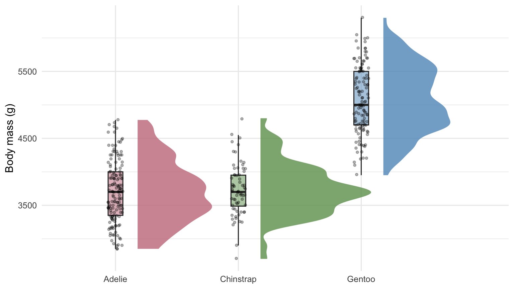

Block 6: Writing figure legends
A figure in a journal or lab report is not finished until its legend is. The legend lets a reader understand the figure without going back to the main text, which is the third of the three questions for every figure (Block 7): is the figure self-contained?
The four elements
Write a legend as four elements, in this order:
- Descriptive sentence. What the figure shows, stated neutrally, in the past tense. A description, not a result.
- Methods and sample. Where the data came from (with a citation), the sample size for each group, and any exclusions.
- Statistical model and result. The test, the test statistic with its degrees of freedom, the p-value (exact, or bounded such as p < 0.001), and any adjustment for multiple comparisons. Leave this element out if the figure is purely descriptive: never invent a test to fill it.
- Visual components defined. Every layer on the figure (density, box, points, error bars, colours, shapes) explained.
Most bad legends fail in one of two ways: they are too vague (leaving out details the reader needs), or they put the wrong kind of thing in an element (a result where a description belongs, or a plot name where a definition belongs).
Game: legend triage
The facilitator puts each fragment on screen. Post your verdict in the chat, then check it here.
| Fragment | Your verdict |
|---|---|
| “Body mass of three penguin species in the Palmer Archipelago, Antarctica.” | |
| “Gentoo penguins are heavier.” | |
| “n = 342.” | |
| “Shows a raincloud plot.” | |
| “ANOVA showed differences (p < 0.05).” |
- “n = 342” gives only the total. The reader needs the sample size for each group, the data source and any exclusions.
- “ANOVA showed differences (p < 0.05)” names a test, but gives no test statistic, no degrees of freedom and only a threshold rather than the p-value.
- “Shows a raincloud plot” tells the reader what kind of plot it is, but not what the cloud, the box or the points mean.
🏆 Challenge: legend repair
Figure 1. Gentoo penguins are heavier. Data from a survey (n = 342). Species differed significantly (p < 0.05). Shows a raincloud plot.
Legend repair (solo race, 10 minutes)
The legend above breaks every rule. Rewrite it as a four-element legend for this figure.
What you need to know:
- The data are body masses from the Palmer Penguins dataset (Horst, Hill and Gorman, 2020). Penguins with no recorded body mass were excluded.
- A one-way ANOVA of body mass on species was fitted, with Tukey-adjusted pairwise contrasts.
- Work out the sample sizes and the ANOVA result yourself:
Post your legend in the chat. Scoring: one point for each element that is present and correct, and a bonus point if every visual layer (cloud, box, points) is defined. The facilitator reads out the best one.
Figure 1. Body mass (g) of three penguin species (Pygoscelis adeliae, P. antarcticus and P. papua) in the Palmer Archipelago, Antarctica. Data are from the Palmer Penguins dataset (Horst, Hill and Gorman, 2020); penguins with no recorded body mass were excluded, giving 151 Adelie, 68 Chinstrap and 123 Gentoo individuals. A one-way ANOVA showed that body mass differed between species (F(2, 339) = 343.6, p < 0.001); pairwise contrasts were Tukey-adjusted. The shaded region shows a kernel density estimate of each distribution; the box shows the interquartile range with the median as a horizontal line; points are individual penguins, jittered horizontally.
The four elements are, in order: the descriptive sentence; the source, exclusions and sample sizes; the test and its result; and the definitions of the cloud, box and points. Note that the legend still describes: the conclusion (“Gentoo are heavier”) belongs in the main text or, for a talk or poster, in an explanatory title (Block 2).
Note
In the Quarto session you will put a legend like this into a figure’s fig-cap option, so the caption travels with the figure and can be cross-referenced in your text.
Block 7: Three questions for every figure
Every figure you produce, in every context, should answer three questions. If it cannot, it is not finished.
Does the visual impression match the data? Honest axes, appropriate encoding, no distortion. The reader should reach the same conclusion from the figure that they would reach from the underlying numbers.
Who is the audience and does the design serve them? Complexity, annotation density, and font size calibrated to the reader. A journal figure, a poster figure and a public engagement figure each need a different design.
Is the figure self-contained? Labels, units, a legend that defines every visual layer, and ideally the script that produced it, so a future reader (including yourself) can reconstruct what you did and why.
Final check: true or false?
- A bar chart of means may start its y-axis at any value, as long as it is labelled.
- Colour should never be the only cue that distinguishes groups.
-
theme_barbie()is fine for a journal figure if the reviewers like pink. - An interactive
ggiraphfigure can replace the static figure in a PDF manuscript. - Setting
base_sizescales every text element in the figure together. - A figure legend should state the main conclusion in its first sentence.
Take-home exercise
Your homework is to apply everything from the workshop to your own data. The aim is to produce one publication-ready figure from your own dataset, using the techniques from Blocks 1 to 7.
Take-home: one publication-ready figure
Choose a dataset from your own research with at least one continuous variable, one categorical grouping, and a sample size of at least thirty observations. Produce one publication-ready figure that applies the principles and extensions from this workshop:
-
Block 1. Variable types determine the chart. Honest axes. Accessible palette via
colorspace. The encoding hierarchy applied: most important variable to position, most important categorical to colour hue with shape redundantly. - Block 2. Audience-appropriate framing: pick journal/lab report unless you have a specific other audience in mind. Descriptive title.
-
Block 3. A
theme_project()(or equivalent) applied; scales formatted withscales::breaks_pretty()and an appropriatescales::label_*()function for the units. -
Block 4. At least one extension used appropriately (raincloud distribution display, direct labelling with
ggrepelorggtext, or multi-panel composition withpatchwork). -
Block 5. Save the figure as both PDF and PNG using
ragg::agg_pngfor the PNG; verify withcolorBlindness::cvdPlot()before saving. - Block 6. Write a four-element legend for it.
- Block 7. Check it against the three questions.
A skeleton to adapt
# !! PARTICIPANT: replace the data load with your own file.
my_data <- readr::read_csv(here::here("data", "my_data.csv"))
# Source the project theme function defined in Block 3
# (paste theme_project() into R/functions/plot_functions.R first)
source(here::here("R", "functions", "plot_functions.R"))
# Build the figure using the patterns from Blocks 1-4.
# Example structure (modify to match your variables and audience):
my_figure <- my_data |>
tidyr::drop_na(<your_continuous_var>, <your_grouping_var>) |>
ggplot2::ggplot(ggplot2::aes(x = <your_grouping_var>,
y = <your_continuous_var>,
fill = <your_grouping_var>)) +
ggdist::stat_halfeye(adjust = 0.5, justification = -0.2,
.width = 0, point_colour = NA, alpha = 0.8) +
ggplot2::geom_boxplot(width = 0.12, outlier.shape = NA, alpha = 0.5) +
colorspace::scale_fill_discrete_qualitative(palette = "Dark2") +
ggplot2::scale_y_continuous(
breaks = scales::breaks_pretty(n = 6)
) +
ggplot2::labs(x = NULL, y = "<Variable name (unit)>") +
theme_project(base_size = 12) +
ggplot2::theme(legend.position = "none")
# Verify accessibility before saving
colorBlindness::cvdPlot(my_figure)
# Save in both formats
ggplot2::ggsave(
filename = here::here("outputs", "figures", "my_figure.pdf"),
plot = my_figure,
width = 7, height = 5, units = "in"
)
ggplot2::ggsave(
filename = here::here("outputs", "figures", "my_figure.png"),
plot = my_figure,
width = 7, height = 5, units = "in",
dpi = 300, device = ragg::agg_png, bg = "white"
)
Tip
If your figure passes colorBlindness::cvdPlot() and the legend would let someone understand it without the manuscript text, you have met the standard. If either fails, fix it before submitting.
Note
These rules as an AI skill. Everything in this workshop, from the chart-type and audience tables to the accessibility check and the two-format save, can be written down once for an AI assistant to follow. Day 4 does exactly that: the instructions-and-skills block provides pub-figures, a skill that packages these conventions with a fuller version of theme_project(), and shows you how to test whether an assistant actually follows them.
Further reading and references
- Allen, M., Poggiali, D., Whitaker, K., Marshall, T.R., van Langen, J. and Kievit, R.A. (2021) Raincloud plots: a multi-platform tool for robust data visualization. Wellcome Open Research, 4, 63.
- Cleveland, W.S. and McGill, R. (1984) Graphical perception: theory, experimentation, and application to the development of graphical methods. Journal of the American Statistical Association, 79(387), 531–554.
- Cumming, G., Fidler, F. and Vaux, D.L. (2007) Error bars in experimental biology. Journal of Cell Biology, 177(1), 7–11.
- Domin, I. (2025) ggview: ‘ggplot2’ Picture Previewer. R package 0.2.2. https://doi.org/10.32614/CRAN.package.ggview
- Healey, C.G. and Enns, J.T. (2012) Attention and visual memory in visualization and computer graphics. IEEE Transactions on Visualization and Computer Graphics, 18(7), 1170–1188.
- Horst, A.M., Hill, A.P. and Gorman, K.B. (2020) palmerpenguins: Palmer Archipelago (Antarctica) penguin data. R package, https://allisonhorst.github.io/palmerpenguins/
- Mackinlay, J. (1986) Automating the design of graphical presentations of relational information. ACM Transactions on Graphics, 5(2), 110–141. https://doi.org/10.1145/22949.22950
- Okabe, M. and Ito, K. (2008) Color Universal Design (CUD). https://jfly.uni-koeln.de/color/
- Sharpe, L.T., Stockman, A., Jägle, H. and Nathans, J. (1999) Opsin genes, cone photopigments, color vision and color blindness. In Color Vision: From Genes to Perception, 3–51.
- Tufte, E.R. (1983) The Visual Display of Quantitative Information. Graphics Press.
- Weissgerber, T.L., Milic, N.M., Winham, S.J. and Garovic, V.D. (2015) Beyond bar and line graphs: time for a new data presentation paradigm. PLOS Biology, 13(4), e1002128.
- Wilke, C.O. (2019) Fundamentals of Data Visualization. O’Reilly Media. https://clauswilke.com/dataviz/
- Zeileis, A., Fisher, J.C., Hornik, K., Ihaka, R., McWhite, C.D., Murrell, P., Stauffer, R. and Wilke, C.O. (2020) colorspace: A toolbox for manipulating and assessing colors and palettes. Journal of Statistical Software, 96(1), 1–49.